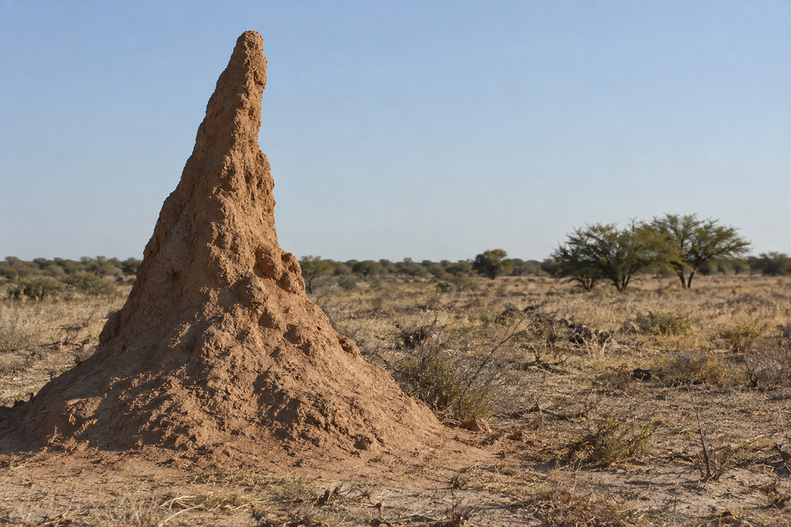

Home > Chronicles of a biblio-naturalist > Biomimesis in Action (07)
Biomimesis in Action (07)
The City Built by Heat
Termite mounds and distributed regulation
A system no one can see whole
Large knowledge systems contain a basic organizational difficulty that becomes more pronounced as they grow. No individual can observe everything happening inside a large catalogue, repository, archive, vocabulary, or digital collection. Records are created and revised by different people at different times; technical processes alter them in ways that descriptive staff may never see; users discover problems that custodians do not encounter; communities may recognize errors that remain invisible to the institution responsible for the data. Central policies can govern the system, but central observation cannot accompany every interaction occurring within it.
Institutions compensate through audits, quality-control procedures, specialist units, documentation, review committees, and technical monitoring. These mechanisms are necessary, particularly where errors carry legal, ethical, or preservation consequences. Their limitation is temporal and practical. By the time a problem reaches the part of the institution authorized to respond, it may already have been repeated through hundreds of records, exported into other systems, inherited by later staff, or absorbed into routine practice.
Consider a subject term that has become misleading. A cataloguer encounters the problem while describing new material because the authorized vocabulary forces a distinction that the collection does not sustain. The cataloguer can work around it locally, perhaps by adding another term or inserting an explanatory note, while the vocabulary itself remains unchanged. Months later another cataloguer encounters the same difficulty and improvises another solution. The institution now possesses several pieces of evidence that something is wrong, yet the structure generating the problem continues operating as before.
Regulation becomes difficult when information about the condition of a system is produced at one place while the capacity to modify that system resides somewhere else. Termite mounds provide an unusual biological case through which to examine that separation.
Heat moving through a mound
The familiar description of termite mounds as naturally air-conditioned skyscrapers obscures considerable variation among species and has encouraged claims that extend well beyond the available evidence. Detailed physiological work has concentrated on a limited number of mound-building termites, and different studies have identified different contributions from heat, wind, mound porosity, and architecture. The useful evidence is therefore species-specific.
King, Ocko, and Mahadevan studied mounds of Odontotermes obesus in India and measured a daily reversal of internal airflow associated with heating and cooling of the mound. The thin peripheral parts of the structure respond to external temperature changes more quickly than its heavier interior. During the day this difference produces one pattern of convection; after sunset the thermal relationship changes and circulation reverses. The resulting movement contributes to transporting gases between the subterranean nest and the atmosphere (King, Ocko, and Mahadevan 2015).
Ocko and colleagues later documented related solar-driven convection in Namibian mounds of Macrotermes michaelseni, although mound architecture, environmental exposure, and patterns of gas movement differed from those described for O. obesus (Ocko et al. 2017). Earlier work by Turner had emphasized wind-driven exchange in M. michaelseni, and Ocko and colleagues noted that the contribution of wind and thermal convection may vary with conditions and season (Turner 2001; Ocko et al. 2017). The research therefore supports a physical relationship between environmental variation and ventilation in particular termite mounds without providing a universal model for termite architecture.
The mechanism relevant here lies in the interaction between changing conditions and an existing structure. Daily heating does not have to be eliminated before the colony can maintain gas exchange. Different parts of the mound respond differently to that heating, and their arrangement converts the resulting gradients into circulation. Regulation is partly produced by what happens when an external change passes through a structure with particular properties.
For knowledge infrastructures, the interesting possibility is that disturbances and local encounters can also reveal the internal condition of a system. Their informational value depends on whether the infrastructure has ways to register what they expose.
Where problems become visible
A catalogue migration offers a straightforward example. During ordinary use, an old metadata field can survive for years without attracting much attention. Its values continue displaying correctly enough, searches still return records, and staff learn to live with irregularities whose origins nobody remembers. Migration changes the situation because every field suddenly has to be understood well enough to map, transform, retain, or discard.
The migration has exposed something about the system that routine operation concealed. Perhaps the field contains several kinds of information that should never have been combined. Perhaps values entered twenty years earlier follow conventions no longer documented. Perhaps a local distinction has no equivalent in the new platform. Once discovered, those problems can be solved for the immediate migration and then disappear again into project documentation, or they can alter the institutional understanding of the data so that later work begins from what the migration revealed.
The difference lies in whether the encounter changes the shared environment.
Something similar occurs in descriptive work. When a researcher establishes that an attribution in an archival record is uncertain, the discovery has consequences beyond the research project in which it was made. If the uncertainty remains in correspondence, a publication, or a private set of notes, the institutional description continues to generate unwarranted certainty for everyone who encounters it later. The knowledge has reached the institution in one sense while remaining absent from the structure that governs subsequent interpretation.
Termite construction experiments offer a second biological mechanism for examining this problem. Green and colleagues observed early construction by workers of Macrotermes michaelseni and M. natalensis under laboratory conditions and found that workers aggregated around active excavation sites, which subsequently influenced where transported soil accumulated (Green et al. 2017). Calovi and colleagues later tested M. michaelseni workers on artificial surfaces and found that soil displacement was associated with surface curvature. They argued that the topography created by earlier activity could persist long enough to influence subsequent construction, giving the structure a form of physical memory (Calovi et al. 2019).
The experiments do not provide a complete explanation of mature mound construction, and their authors do not claim that they do. They establish something more limited and sufficient for the comparison developed here: work already performed can modify the environment encountered by later workers, and that altered environment can affect where subsequent work occurs.
Institutional memory that can act
Knowledge institutions preserve enormous amounts of information about their own decisions. They maintain cataloguing manuals, accession records, migration reports, conservation histories, correspondence, meeting minutes, local policies, data dictionaries, and procedural documentation. Much of this material functions as institutional memory, although its mere existence does not ensure that it influences later action.
A description may have an extensive history scattered through several administrative records while the catalogue presents only its current form. Someone working on the record years later may therefore inherit the result without encountering the uncertainty, disagreement, or compromise that produced it. The institution remembers in documentary terms while the working system behaves as though the history did not exist.
Distributed regulation requires a stronger relationship between memory and action. Information about a condition must remain close enough to the part of the system it affects that later encounters can take it into account. Provenance uncertainty that changes the interpretation of an archival object belongs within the descriptive environment through which that object is encountered. A restriction governing a digital file has little regulatory force when it survives only in documentation separated from the file and its metadata. A contested term can continue reproducing an old problem when the history of that contestation is inaccessible to the people who encounter the term during description.
This principle changes the function of documentation. Instead of serving only as evidence of previous decisions, some documentation becomes part of the environment in which subsequent decisions occur. The distinction is practical rather than metaphorical. A flag, annotation, status field, version history, provenance note, rights condition, or recorded challenge can alter what the next worker is able or expected to do because information from an earlier encounter remains present at the point where another decision must be made.
The termite comparison is useful precisely at this modest scale. Earlier building activity changes the surface on which later workers operate. In a knowledge infrastructure, previous interpretation can likewise modify the working environment encountered by later participants. Human institutions have to construct this continuity deliberately because descriptions, databases, and policies do not reorganize themselves.
From noticing to changing
The persistent difficulty is institutional rather than technical. Many systems are good at receiving observations and poor at allowing observations to modify the structures that made them necessary.
Community consultation makes the problem especially visible. An institution may invite people connected with a collection to review descriptions and may receive corrections concerning names, places, relationships, translations, or categories. If those contributions are recorded mainly as the outcome of a consultation project, the institution has acquired knowledge without necessarily changing the environment in which future description takes place. Later cataloguers can continue using the same vocabulary and assumptions because the results of the consultation remain attached to the event rather than incorporated into ongoing descriptive practice.
A system capable of responding differently would need a route through which the observation could acquire consequences appropriate to its status. That route cannot simply mean allowing anyone to overwrite any record. Description involves evidential questions, rights, conflicting interpretations, institutional responsibilities, and sometimes serious disagreements over authority. The relevant design problem concerns how an observation can remain attached to the system long enough to be reviewed, interpreted, contested where necessary, and eventually reflected in the structures that govern later work.
The subject vocabulary mentioned earlier provides one possible case. A cataloguer who repeatedly encounters a problematic heading should be able to leave more than a local workaround. The vocabulary could preserve evidence that the term has been challenged and allow the issue to enter an established review process. If the term is eventually revised, the history of that revision can remain recoverable so that old records, mappings, exports, and earlier uses do not become unintelligible. Local observation has then modified a shared environment without pretending that the first person who noticed the problem possessed sufficient authority to resolve it alone.
The same architecture of response can operate at other scales. Preservation work benefits when a failure discovered during ordinary use becomes visible to later technical processes instead of disappearing after one successful recovery. Archival description benefits when new provenance research changes the context presented around a record rather than surviving solely in the publication that reported it. Repository governance benefits when access decisions remain connected to the materials they regulate as those materials move through different platforms.
These are not examples of self-organization in the biological sense. Every mechanism involved has to be designed, maintained, interpreted, and governed by people. Their relevance to distributed regulation comes from reducing the dependence on a central observer who must independently discover every condition requiring attention.
What the structure teaches
The strongest transfer from termite construction concerns the consequences of earlier activity. The surface on which a termite works has a history, whether or not the worker possesses any representation of that history. Previous excavation and deposition have altered the physical conditions of the next encounter.
Knowledge infrastructures have the same temporal depth, although it is often hidden behind interfaces that present the current system as a finished surface. A classification contains decades of decisions about similarity and difference. A database schema reflects earlier technical possibilities and institutional priorities. A catalogue embodies descriptive conventions inherited through successive standards, local practices, migrations, and corrections. Later workers do not approach an empty environment; they encounter possibilities already shaped by those histories.
Once that fact is recognized, interface and data design acquire regulatory significance. A system that makes previous uncertainty visible produces a different working environment from one that displays only the latest authorized answer. A system that preserves the history of a changed description gives later workers access to evidence that a seemingly straightforward record has been contested. When important context survives only in peripheral documents that routine work never exposes, the inherited structure teaches something else: it presents historical decisions as settled facts.
The design of knowledge systems therefore affects what later participants are likely to notice before any explicit policy decision is made. A mandatory field can make a question unavoidable; an invisible note can make the same question disappear. Search ranking influences which materials become familiar enough to attract further description and research. Vocabulary mappings determine which distinctions survive when information moves between systems. Regulation occurs partly through these accumulated conditions of work.
Termite mounds make this relationship unusually concrete because physical structure and collective activity remain coupled. Human information systems can separate them much more thoroughly. The people who alter a data model may never catalogue a record, while cataloguers may have little capacity to change the model that constrains their work. Distributed regulation becomes particularly important across those separations because local knowledge otherwise accumulates at the edges of structures that remain unchanged.
Feedback and inherited power
There is no reason to assume that a system shaped by accumulated local responses will become better. Feedback can stabilize an error very efficiently.
A problematic category becomes harder to dislodge after thousands of records have been built around it. Each additional use creates another dependency: mappings point toward it, interfaces expose it, statistics count it, users learn it, and procedures begin assuming its existence. What began as one descriptive decision gradually acquires infrastructural weight. Later workers encounter that weight as part of the environment in which they must operate.
Distributed regulation can reproduce unequal authority in the same way. Observations made by staff inside an institution may have obvious channels into its systems, while knowledge coming from communities represented in the collection may depend on temporary projects or personal relationships to reach the catalogue at all. Allowing local information to modify a shared environment therefore raises questions about whose local information is recognized, who can initiate review, whose disagreement remains visible, and who carries responsibility when several interpretations cannot be reconciled.
Termite biology cannot answer any of those questions. The regulatory processes studied in termite colonies have no equivalent to rights over cultural materials, contested ownership, colonial histories, professional accountability, consent, or conflicting interpretations of evidence. Human institutions require governance precisely because the success of a knowledge system cannot be reduced to efficient coordination.
That requirement also prevents distributed regulation from becoming an excuse for institutional withdrawal. A library cannot respond to insufficient staffing by celebrating emergence. An archive cannot replace professional responsibility with the hope that users will correct its records. Community participation cannot become unpaid quality control for institutions that retain final authority. Local responsiveness requires central commitments to resources, procedures, accountability, and the capacity to act on what the system learns.
The city built by heat
The title of this post comes from the ventilation studies rather than from a claim that heat constructs termite mounds. In Odontotermes obesus, daily thermal change interacts with mound structure to generate circulation, while research on Macrotermes construction shows how local activity can alter conditions encountered during subsequent work. These are distinct findings from different studies, and together they suggest a general organizational question rather than a biological blueprint.
Knowledge systems continuously encounter signals about their own condition. A migration exposes an undocumented dependency. Description reveals the inadequacy of a category. Research alters what is known about provenance. Use exposes a technical weakness. Community knowledge challenges the assumptions embedded in a record. Much of the information needed to regulate the system therefore appears during activity, far from the places where policy and infrastructure are centrally managed.
A resilient knowledge infrastructure needs ways for those encounters to leave consequential traces. Some will require immediate correction, others formal review, and others a durable record of unresolved disagreement. Their treatment will depend on the institution, the materials, and the authority of the people involved. What they share is the requirement that information about the system should be capable of entering the system rather than remaining external commentary on it.
Central coordination remains necessary because someone must maintain the conditions under which these local responses can become responsible institutional action. Distributed regulation changes the task of that center. Instead of attempting to detect every problem independently, it can build channels through which problems encountered elsewhere remain visible, travel to the appropriate level of decision, and alter the working environment when action has been taken.
The termite mound provides a biological mechanism for thinking about that arrangement because regulation can arise through continuing interaction among changing conditions, existing structure, and local activity. Its relevance to libraries and archives lies in the practical limitation shared by every sufficiently complex system: nobody sees the whole thing while it is operating. The question for information design is what the system can nevertheless learn from the people who encounter its parts, and how that learning can change the conditions encountered by whoever comes next.
Bibliography
- Calovi, Daniel S., Paul Bardunias, Nicole Carey, J. Scott Turner, Radhika Nagpal, and Justin Werfel. 2019. "Surface Curvature Guides Early Construction Activity in Mound-Building Termites." Philosophical Transactions of the Royal Society B: Biological Sciences 374 (1774): 20180374.
- Green, Ben, Paul Bardunias, J. Scott Turner, Radhika Nagpal, and Justin Werfel. 2017. "Excavation and Aggregation as Organizing Factors in de Novo Construction by Mound-Building Termites." Proceedings of the Royal Society B: Biological Sciences 284 (1856): 20162730.
- King, Hunter, Samuel Ocko, and L. Mahadevan. 2015. "Termite Mounds Harness Diurnal Temperature Oscillations for Ventilation." Proceedings of the National Academy of Sciences of the United States of America 112 (37): 11589–11593.
- Ocko, Samuel A., Hunter King, David Andreen, Paul Bardunias, J. Scott Turner, Rupert Soar, and L. Mahadevan. 2017. "Solar-Powered Ventilation of African Termite Mounds." Journal of Experimental Biology 220 (18): 3260–3269.
- Turner, J. Scott. 2001. "On the Mound of Macrotermes michaelseni as an Organ of Respiratory Gas Exchange." Physiological and Biochemical Zoology 74 (6): 798–822.